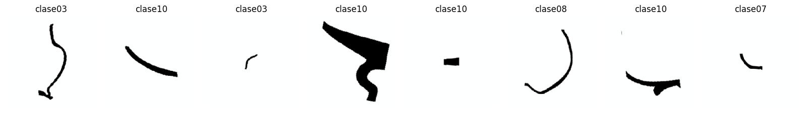
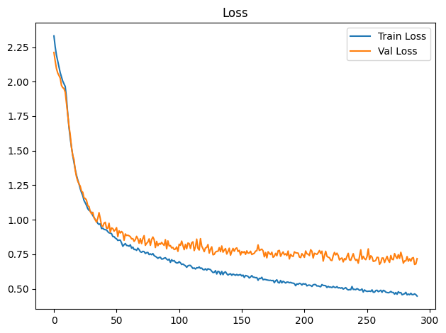
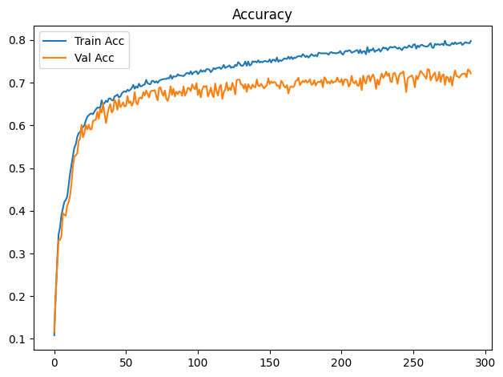
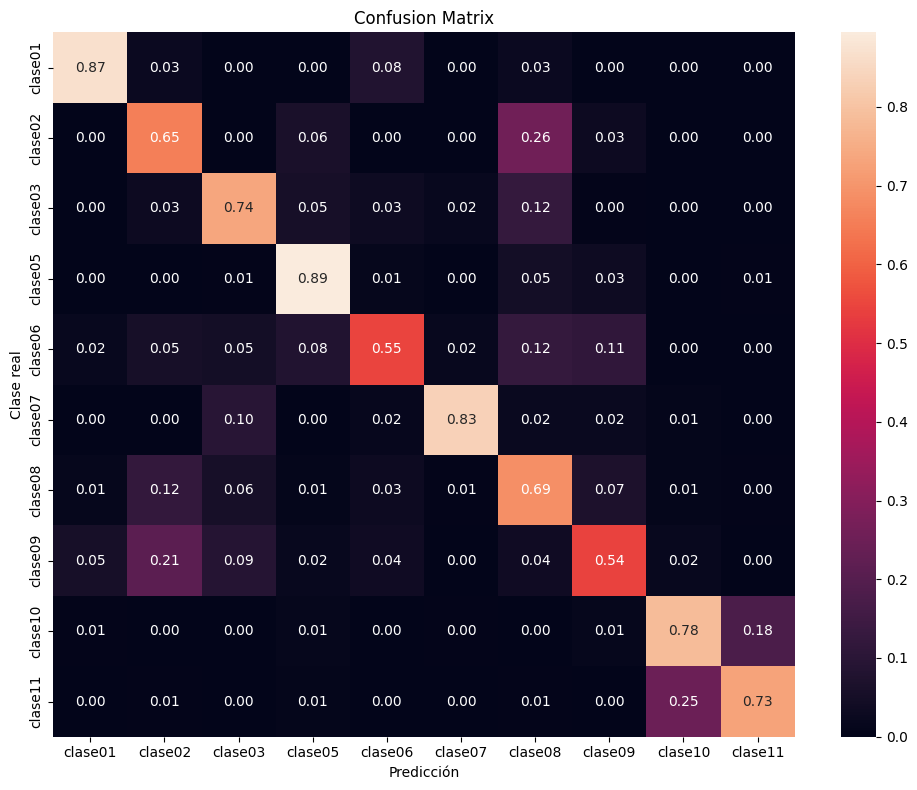

Dispositivo utilizado para procesamiento: CUDA - NVIDIA GeForce GTX 1650Entrenamiento de CNN ResNet-18 con Transfer Learning
Objetivos
- Construir un modelo baseline de clasificación mediante transfer learning con ResNet18 preentrenada.
- Entrenar inicialmente solo la capa clasificadora y descongelar
layer4enUNFREEZE_EPOCHcon una tasa de aprendizaje menor. - Aplicar transformaciones y aumentación de datos al conjunto de entrenamiento.
- Entrenar y validar el modelo registrando loss y accuracy por época.
- Detener el entrenamiento si val_loss no mejora suficientemente durante la paciencia configurada.
- Evaluar el modelo de la mejor época de validación sobre el conjunto de prueba.
- Analizar los resultados mediante accuracy, precision, recall, F1-score, reporte de clasificación y matriz de confusión normalizada.
- Guardar los pesos restaurados de la mejor época de validación (o los finales si se desactiva la parada anticipada).
Dispositivo para procesamiento
División de datos
La pertenencia de cada imagen a train, val o test se lee de la metadata generada por el notebook de división. La relación se realiza mediante ruta_relativa; por tanto, el split no se recalcula aunque cambien la semilla o los parámetros del entrenamiento.
Dataset seleccionado: unificado
Directorio de datos: /home/rafael/Dev/vasijas/data/12.unificado_divididos_en_train_val_y_test
Metadata de split: data/12.unificado_divididos_en_train_val_y_test/metadata.csv
Clases: clase01 clase02 clase03 clase05 clase06 clase07 clase08 clase09 clase10 clase11
Split persistido -> train: 14231, val: 3059, test: 3059
Conteo train por clase: [342, 608, 950, 741, 684, 646, 3724, 266, 4712, 1558]
Pesos de clase: [4.161, 2.341, 1.498, 1.921, 2.081, 2.203, 0.382, 5.35, 0.302, 0.913]Epoch 1/300
Train Loss: 2.3311 | Train Acc: 0.1085 | Val Loss: 2.2114 | Val Acc: 0.1161
Tiempo de epoch: 0:01:27.217057
Epoch 2/300
Train Loss: 2.2516 | Train Acc: 0.2006 | Val Loss: 2.1489 | Val Acc: 0.2050
Tiempo de epoch: 0:01:24.226318
Epoch 3/300
Train Loss: 2.1922 | Train Acc: 0.2800 | Val Loss: 2.0948 | Val Acc: 0.2668
Tiempo de epoch: 0:01:24.225727
Epoch 4/300
Train Loss: 2.1502 | Train Acc: 0.3437 | Val Loss: 2.0631 | Val Acc: 0.3305
Tiempo de epoch: 0:01:24.410925
Epoch 5/300
Train Loss: 2.1080 | Train Acc: 0.3613 | Val Loss: 2.0445 | Val Acc: 0.3318
Tiempo de epoch: 0:01:24.391896
Epoch 6/300
Train Loss: 2.0649 | Train Acc: 0.3900 | Val Loss: 2.0257 | Val Acc: 0.3410
Tiempo de epoch: 0:01:24.288938
Epoch 7/300
Train Loss: 2.0347 | Train Acc: 0.4050 | Val Loss: 1.9731 | Val Acc: 0.3946
Tiempo de epoch: 0:01:24.526694
Epoch 8/300
Train Loss: 2.0043 | Train Acc: 0.4208 | Val Loss: 1.9571 | Val Acc: 0.3907
Tiempo de epoch: 0:01:24.314079
Epoch 9/300
Train Loss: 1.9842 | Train Acc: 0.4253 | Val Loss: 1.9500 | Val Acc: 0.3884
Tiempo de epoch: 0:01:24.371574
Epoch 10/300
Train Loss: 1.9652 | Train Acc: 0.4328 | Val Loss: 1.9242 | Val Acc: 0.4122
Tiempo de epoch: 0:01:24.440701
Epoch 11: se descongela layer4 con lr=1.00e-06 (head lr=1.00e-05)
Epoch 11/300
Train Loss: 1.8839 | Train Acc: 0.4589 | Val Loss: 1.8460 | Val Acc: 0.4204
Tiempo de epoch: 0:01:57.953578
Epoch 12/300
Train Loss: 1.7669 | Train Acc: 0.4868 | Val Loss: 1.7646 | Val Acc: 0.4354
Tiempo de epoch: 0:01:56.174426
Epoch 13/300
Train Loss: 1.6700 | Train Acc: 0.5081 | Val Loss: 1.6784 | Val Acc: 0.4639
Tiempo de epoch: 0:01:56.199913
Epoch 14/300
Train Loss: 1.5894 | Train Acc: 0.5291 | Val Loss: 1.6152 | Val Acc: 0.5034
Tiempo de epoch: 0:01:56.256480
Epoch 15/300
Train Loss: 1.5288 | Train Acc: 0.5481 | Val Loss: 1.5227 | Val Acc: 0.5270
Tiempo de epoch: 0:01:56.295291
Epoch 16/300
Train Loss: 1.4647 | Train Acc: 0.5558 | Val Loss: 1.4668 | Val Acc: 0.5299
Tiempo de epoch: 0:01:56.204746
Epoch 17/300
Train Loss: 1.4135 | Train Acc: 0.5728 | Val Loss: 1.4361 | Val Acc: 0.5345
Tiempo de epoch: 0:01:56.141602
Epoch 18/300
Train Loss: 1.3643 | Train Acc: 0.5821 | Val Loss: 1.3605 | Val Acc: 0.5636
Tiempo de epoch: 0:01:56.156340
Epoch 19/300
Train Loss: 1.3230 | Train Acc: 0.5840 | Val Loss: 1.3101 | Val Acc: 0.5695
Tiempo de epoch: 0:01:56.198244
Epoch 20/300
Train Loss: 1.2884 | Train Acc: 0.5956 | Val Loss: 1.2803 | Val Acc: 0.6015
Tiempo de epoch: 0:01:56.424880
Epoch 21/300
Train Loss: 1.2594 | Train Acc: 0.5957 | Val Loss: 1.2603 | Val Acc: 0.5724
Tiempo de epoch: 0:01:56.275741
Epoch 22/300
Train Loss: 1.2247 | Train Acc: 0.6008 | Val Loss: 1.2430 | Val Acc: 0.5829
Tiempo de epoch: 0:01:56.268566
Epoch 23/300
Train Loss: 1.1967 | Train Acc: 0.6116 | Val Loss: 1.2072 | Val Acc: 0.6012
Tiempo de epoch: 0:01:56.245272
Epoch 24/300
Train Loss: 1.1748 | Train Acc: 0.6204 | Val Loss: 1.1993 | Val Acc: 0.5904
Tiempo de epoch: 0:01:56.170621
Epoch 25/300
Train Loss: 1.1395 | Train Acc: 0.6238 | Val Loss: 1.1585 | Val Acc: 0.6018
Tiempo de epoch: 0:01:56.286755
Epoch 26/300
Train Loss: 1.1228 | Train Acc: 0.6271 | Val Loss: 1.1549 | Val Acc: 0.5904
Tiempo de epoch: 0:01:56.369488
Epoch 27/300
Train Loss: 1.1042 | Train Acc: 0.6282 | Val Loss: 1.1415 | Val Acc: 0.5914
Tiempo de epoch: 0:01:56.043953
Epoch 28/300
Train Loss: 1.0805 | Train Acc: 0.6262 | Val Loss: 1.1025 | Val Acc: 0.6110
Tiempo de epoch: 0:01:56.169417
Epoch 29/300
Train Loss: 1.0680 | Train Acc: 0.6326 | Val Loss: 1.0956 | Val Acc: 0.6116
Tiempo de epoch: 0:01:56.367078
Epoch 30/300
Train Loss: 1.0629 | Train Acc: 0.6376 | Val Loss: 1.0590 | Val Acc: 0.6146
Tiempo de epoch: 0:01:56.313312
Epoch 31/300
Train Loss: 1.0511 | Train Acc: 0.6418 | Val Loss: 1.0432 | Val Acc: 0.6322
Tiempo de epoch: 0:01:56.345480
Epoch 32/300
Train Loss: 1.0308 | Train Acc: 0.6413 | Val Loss: 1.0541 | Val Acc: 0.6156
Tiempo de epoch: 0:01:56.133479
Epoch 33/300
Train Loss: 1.0178 | Train Acc: 0.6418 | Val Loss: 1.0151 | Val Acc: 0.6391
Tiempo de epoch: 0:01:56.102689
Epoch 34/300
Train Loss: 1.0002 | Train Acc: 0.6588 | Val Loss: 0.9996 | Val Acc: 0.6299
Tiempo de epoch: 0:01:56.211081
Epoch 35/300
Train Loss: 0.9923 | Train Acc: 0.6485 | Val Loss: 0.9824 | Val Acc: 0.6512
Tiempo de epoch: 0:01:56.270782
Epoch 36/300
Train Loss: 0.9740 | Train Acc: 0.6526 | Val Loss: 1.0106 | Val Acc: 0.6273
Tiempo de epoch: 0:01:56.164062
Epoch 37/300
Train Loss: 0.9662 | Train Acc: 0.6581 | Val Loss: 1.0516 | Val Acc: 0.6058
Tiempo de epoch: 0:01:56.225887
Epoch 38/300
Train Loss: 0.9710 | Train Acc: 0.6548 | Val Loss: 1.0087 | Val Acc: 0.6250
Tiempo de epoch: 0:01:56.190425
Epoch 39/300
Train Loss: 0.9363 | Train Acc: 0.6632 | Val Loss: 0.9591 | Val Acc: 0.6414
Tiempo de epoch: 0:01:56.266080
Epoch 40/300
Train Loss: 0.9385 | Train Acc: 0.6633 | Val Loss: 0.9505 | Val Acc: 0.6499
Tiempo de epoch: 0:01:56.184099
Epoch 41/300
Train Loss: 0.9306 | Train Acc: 0.6597 | Val Loss: 0.9753 | Val Acc: 0.6303
Tiempo de epoch: 0:01:56.212216
Epoch 42/300
Train Loss: 0.9278 | Train Acc: 0.6584 | Val Loss: 0.9818 | Val Acc: 0.6355
Tiempo de epoch: 0:01:56.097377
Epoch 43/300
Train Loss: 0.9267 | Train Acc: 0.6683 | Val Loss: 0.9388 | Val Acc: 0.6603
Tiempo de epoch: 0:01:56.233556
Epoch 44/300
Train Loss: 0.9137 | Train Acc: 0.6697 | Val Loss: 0.9390 | Val Acc: 0.6528
Tiempo de epoch: 0:01:56.243264
Epoch 45/300
Train Loss: 0.9054 | Train Acc: 0.6724 | Val Loss: 0.9748 | Val Acc: 0.6368
Tiempo de epoch: 0:01:56.064197
Epoch 46/300
Train Loss: 0.9033 | Train Acc: 0.6658 | Val Loss: 0.9094 | Val Acc: 0.6613
Tiempo de epoch: 0:01:56.295349
Epoch 47/300
Train Loss: 0.8996 | Train Acc: 0.6676 | Val Loss: 0.9410 | Val Acc: 0.6430
Tiempo de epoch: 0:01:56.219819
Epoch 48/300
Train Loss: 0.8788 | Train Acc: 0.6751 | Val Loss: 0.9363 | Val Acc: 0.6469
Tiempo de epoch: 0:01:56.373645
Epoch 49/300
Train Loss: 0.8777 | Train Acc: 0.6782 | Val Loss: 0.9177 | Val Acc: 0.6541
Tiempo de epoch: 0:01:56.085442
Epoch 50/300
Train Loss: 0.8674 | Train Acc: 0.6801 | Val Loss: 0.9273 | Val Acc: 0.6443
Tiempo de epoch: 0:01:56.205883
Epoch 51/300
Train Loss: 0.8618 | Train Acc: 0.6782 | Val Loss: 0.9430 | Val Acc: 0.6463
Tiempo de epoch: 0:01:56.283607
Epoch 52/300
Train Loss: 0.8503 | Train Acc: 0.6837 | Val Loss: 0.8781 | Val Acc: 0.6688
Tiempo de epoch: 0:01:56.142124
Epoch 53/300
Train Loss: 0.8524 | Train Acc: 0.6809 | Val Loss: 0.9200 | Val Acc: 0.6525
Tiempo de epoch: 0:01:56.196009
Epoch 54/300
Train Loss: 0.8521 | Train Acc: 0.6837 | Val Loss: 0.9044 | Val Acc: 0.6564
Tiempo de epoch: 0:01:56.126722
Epoch 55/300
Train Loss: 0.8322 | Train Acc: 0.6881 | Val Loss: 0.9153 | Val Acc: 0.6460
Tiempo de epoch: 0:01:56.165865
Epoch 56/300
Train Loss: 0.8080 | Train Acc: 0.6950 | Val Loss: 0.9039 | Val Acc: 0.6538
Tiempo de epoch: 0:01:56.206987
Epoch 57/300
Train Loss: 0.8191 | Train Acc: 0.6860 | Val Loss: 0.8517 | Val Acc: 0.6787
Tiempo de epoch: 0:01:56.233511
Epoch 58/300
Train Loss: 0.8278 | Train Acc: 0.6915 | Val Loss: 0.8975 | Val Acc: 0.6532
Tiempo de epoch: 0:01:56.256364
Epoch 59/300
Train Loss: 0.8138 | Train Acc: 0.6884 | Val Loss: 0.8860 | Val Acc: 0.6492
Tiempo de epoch: 0:01:56.206548
Epoch 60/300
Train Loss: 0.8131 | Train Acc: 0.6979 | Val Loss: 0.8883 | Val Acc: 0.6633
Tiempo de epoch: 0:01:56.151395
Epoch 61/300
Train Loss: 0.8084 | Train Acc: 0.6913 | Val Loss: 0.8838 | Val Acc: 0.6656
Tiempo de epoch: 0:01:56.090684
Epoch 62/300
Train Loss: 0.8188 | Train Acc: 0.6923 | Val Loss: 0.8777 | Val Acc: 0.6630
Tiempo de epoch: 0:01:56.263233
Epoch 63/300
Train Loss: 0.7943 | Train Acc: 0.6949 | Val Loss: 0.8613 | Val Acc: 0.6780
Tiempo de epoch: 0:01:56.312381
Epoch 64/300
Train Loss: 0.8021 | Train Acc: 0.6962 | Val Loss: 0.8638 | Val Acc: 0.6702
Tiempo de epoch: 0:01:56.183740
Epoch 65/300
Train Loss: 0.7844 | Train Acc: 0.7067 | Val Loss: 0.8435 | Val Acc: 0.6816
Tiempo de epoch: 0:01:56.304515
Epoch 66/300
Train Loss: 0.7856 | Train Acc: 0.6990 | Val Loss: 0.8558 | Val Acc: 0.6741
Tiempo de epoch: 0:01:56.142635
Epoch 67/300
Train Loss: 0.7784 | Train Acc: 0.6968 | Val Loss: 0.8801 | Val Acc: 0.6656
Tiempo de epoch: 0:01:56.645515
Epoch 68/300
Train Loss: 0.7945 | Train Acc: 0.6967 | Val Loss: 0.8622 | Val Acc: 0.6796
Tiempo de epoch: 0:01:56.213115
Epoch 69/300
Train Loss: 0.7837 | Train Acc: 0.7042 | Val Loss: 0.8300 | Val Acc: 0.6813
Tiempo de epoch: 0:01:56.209727
Epoch 70/300
Train Loss: 0.7680 | Train Acc: 0.7041 | Val Loss: 0.8629 | Val Acc: 0.6813
Tiempo de epoch: 0:01:56.295734
Epoch 71/300
Train Loss: 0.7648 | Train Acc: 0.7003 | Val Loss: 0.8276 | Val Acc: 0.6829
Tiempo de epoch: 0:01:56.140694
Epoch 72/300
Train Loss: 0.7716 | Train Acc: 0.7036 | Val Loss: 0.8642 | Val Acc: 0.6685
Tiempo de epoch: 0:01:56.328078
Epoch 73/300
Train Loss: 0.7694 | Train Acc: 0.6996 | Val Loss: 0.8852 | Val Acc: 0.6587
Tiempo de epoch: 0:01:56.197734
Epoch 74/300
Train Loss: 0.7558 | Train Acc: 0.7047 | Val Loss: 0.8147 | Val Acc: 0.6885
Tiempo de epoch: 0:01:56.153845
Epoch 75/300
Train Loss: 0.7619 | Train Acc: 0.7064 | Val Loss: 0.8294 | Val Acc: 0.6888
Tiempo de epoch: 0:01:56.140469
Epoch 76/300
Train Loss: 0.7637 | Train Acc: 0.7079 | Val Loss: 0.8387 | Val Acc: 0.6760
Tiempo de epoch: 0:01:56.196587
Epoch 77/300
Train Loss: 0.7478 | Train Acc: 0.7084 | Val Loss: 0.8618 | Val Acc: 0.6692
Tiempo de epoch: 0:01:56.178606
Epoch 78/300
Train Loss: 0.7532 | Train Acc: 0.7091 | Val Loss: 0.8149 | Val Acc: 0.6819
Tiempo de epoch: 0:01:56.370561
Epoch 79/300
Train Loss: 0.7469 | Train Acc: 0.7089 | Val Loss: 0.8567 | Val Acc: 0.6623
Tiempo de epoch: 0:01:56.150620
Epoch 80/300
Train Loss: 0.7552 | Train Acc: 0.7111 | Val Loss: 0.8753 | Val Acc: 0.6574
Tiempo de epoch: 0:01:56.329096
Epoch 81/300
Train Loss: 0.7406 | Train Acc: 0.7101 | Val Loss: 0.8566 | Val Acc: 0.6711
Tiempo de epoch: 0:01:56.273479
Epoch 82/300
Train Loss: 0.7348 | Train Acc: 0.7179 | Val Loss: 0.7989 | Val Acc: 0.6914
Tiempo de epoch: 0:01:56.480461
Epoch 83/300
Train Loss: 0.7290 | Train Acc: 0.7092 | Val Loss: 0.8434 | Val Acc: 0.6718
Tiempo de epoch: 0:01:56.289541
Epoch 84/300
Train Loss: 0.7207 | Train Acc: 0.7151 | Val Loss: 0.8120 | Val Acc: 0.6862
Tiempo de epoch: 0:01:56.358687
Epoch 85/300
Train Loss: 0.7271 | Train Acc: 0.7144 | Val Loss: 0.8290 | Val Acc: 0.6679
Tiempo de epoch: 0:01:56.264838
Epoch 86/300
Train Loss: 0.7285 | Train Acc: 0.7147 | Val Loss: 0.8226 | Val Acc: 0.6790
Tiempo de epoch: 0:01:56.538028
Epoch 87/300
Train Loss: 0.7153 | Train Acc: 0.7199 | Val Loss: 0.8361 | Val Acc: 0.6734
Tiempo de epoch: 0:01:56.426762
Epoch 88/300
Train Loss: 0.7163 | Train Acc: 0.7170 | Val Loss: 0.8245 | Val Acc: 0.6800
Tiempo de epoch: 0:01:56.354407
Epoch 89/300
Train Loss: 0.7224 | Train Acc: 0.7170 | Val Loss: 0.8145 | Val Acc: 0.6780
Tiempo de epoch: 0:01:56.147360
Epoch 90/300
Train Loss: 0.7248 | Train Acc: 0.7163 | Val Loss: 0.8561 | Val Acc: 0.6695
Tiempo de epoch: 0:01:56.139393
Epoch 91/300
Train Loss: 0.7147 | Train Acc: 0.7156 | Val Loss: 0.7900 | Val Acc: 0.6914
Tiempo de epoch: 0:01:56.269738
Epoch 92/300
Train Loss: 0.7081 | Train Acc: 0.7187 | Val Loss: 0.8470 | Val Acc: 0.6702
Tiempo de epoch: 0:01:56.480213
Epoch 93/300
Train Loss: 0.7154 | Train Acc: 0.7225 | Val Loss: 0.8098 | Val Acc: 0.6764
Tiempo de epoch: 0:01:56.210908
Epoch 94/300
Train Loss: 0.6915 | Train Acc: 0.7231 | Val Loss: 0.8133 | Val Acc: 0.6881
Tiempo de epoch: 0:01:56.340603
Epoch 95/300
Train Loss: 0.7108 | Train Acc: 0.7204 | Val Loss: 0.7960 | Val Acc: 0.6868
Tiempo de epoch: 0:01:56.300945
Epoch 96/300
Train Loss: 0.7009 | Train Acc: 0.7269 | Val Loss: 0.7998 | Val Acc: 0.6803
Tiempo de epoch: 0:01:56.246990
Epoch 97/300
Train Loss: 0.7047 | Train Acc: 0.7195 | Val Loss: 0.7846 | Val Acc: 0.6963
Tiempo de epoch: 0:01:56.238721
Epoch 98/300
Train Loss: 0.6927 | Train Acc: 0.7241 | Val Loss: 0.7877 | Val Acc: 0.6885
Tiempo de epoch: 0:01:56.351841
Epoch 99/300
Train Loss: 0.6872 | Train Acc: 0.7256 | Val Loss: 0.8034 | Val Acc: 0.6845
Tiempo de epoch: 0:01:56.180498
Epoch 100/300
Train Loss: 0.6880 | Train Acc: 0.7273 | Val Loss: 0.7713 | Val Acc: 0.6992
Tiempo de epoch: 0:01:56.091832
Epoch 101/300
Train Loss: 0.6966 | Train Acc: 0.7203 | Val Loss: 0.8231 | Val Acc: 0.6715
Tiempo de epoch: 0:01:56.132353
Epoch 102/300
Train Loss: 0.6884 | Train Acc: 0.7245 | Val Loss: 0.8150 | Val Acc: 0.6839
Tiempo de epoch: 0:01:56.301367
Epoch 103/300
Train Loss: 0.6760 | Train Acc: 0.7298 | Val Loss: 0.8455 | Val Acc: 0.6656
Tiempo de epoch: 0:01:56.293795
Epoch 104/300
Train Loss: 0.6795 | Train Acc: 0.7255 | Val Loss: 0.8132 | Val Acc: 0.6845
Tiempo de epoch: 0:01:56.190937
Epoch 105/300
Train Loss: 0.6725 | Train Acc: 0.7285 | Val Loss: 0.7836 | Val Acc: 0.6921
Tiempo de epoch: 0:01:56.092552
Epoch 106/300
Train Loss: 0.6671 | Train Acc: 0.7262 | Val Loss: 0.8221 | Val Acc: 0.6901
Tiempo de epoch: 0:01:56.098324
Epoch 107/300
Train Loss: 0.6556 | Train Acc: 0.7318 | Val Loss: 0.7901 | Val Acc: 0.6927
Tiempo de epoch: 0:01:56.368618
Epoch 108/300
Train Loss: 0.6664 | Train Acc: 0.7320 | Val Loss: 0.8315 | Val Acc: 0.6679
Tiempo de epoch: 0:01:56.182207
Epoch 109/300
Train Loss: 0.6701 | Train Acc: 0.7305 | Val Loss: 0.8277 | Val Acc: 0.6754
Tiempo de epoch: 0:01:56.315372
Epoch 110/300
Train Loss: 0.6694 | Train Acc: 0.7247 | Val Loss: 0.7922 | Val Acc: 0.6885
Tiempo de epoch: 0:01:56.198958
Epoch 111/300
Train Loss: 0.6589 | Train Acc: 0.7289 | Val Loss: 0.8330 | Val Acc: 0.6721
Tiempo de epoch: 0:01:56.152786
Epoch 112/300
Train Loss: 0.6475 | Train Acc: 0.7345 | Val Loss: 0.8403 | Val Acc: 0.6659
Tiempo de epoch: 0:01:56.210885
Epoch 113/300
Train Loss: 0.6511 | Train Acc: 0.7316 | Val Loss: 0.7768 | Val Acc: 0.6983
Tiempo de epoch: 0:01:56.394802
Epoch 114/300
Train Loss: 0.6434 | Train Acc: 0.7345 | Val Loss: 0.8033 | Val Acc: 0.6803
Tiempo de epoch: 0:01:56.266869
Epoch 115/300
Train Loss: 0.6529 | Train Acc: 0.7349 | Val Loss: 0.8598 | Val Acc: 0.6702
Tiempo de epoch: 0:01:56.147328
Epoch 116/300
Train Loss: 0.6518 | Train Acc: 0.7361 | Val Loss: 0.7927 | Val Acc: 0.6901
Tiempo de epoch: 0:01:56.172462
Epoch 117/300
Train Loss: 0.6583 | Train Acc: 0.7323 | Val Loss: 0.7809 | Val Acc: 0.6950
Tiempo de epoch: 0:01:56.228187
Epoch 118/300
Train Loss: 0.6475 | Train Acc: 0.7357 | Val Loss: 0.8631 | Val Acc: 0.6620
Tiempo de epoch: 0:01:56.160800
Epoch 119/300
Train Loss: 0.6505 | Train Acc: 0.7419 | Val Loss: 0.8091 | Val Acc: 0.6777
Tiempo de epoch: 0:01:56.250112
Epoch 120/300
Train Loss: 0.6397 | Train Acc: 0.7345 | Val Loss: 0.7911 | Val Acc: 0.6845
Tiempo de epoch: 0:01:56.270349
Epoch 121/300
Train Loss: 0.6379 | Train Acc: 0.7368 | Val Loss: 0.7692 | Val Acc: 0.7006
Tiempo de epoch: 0:01:56.273375
Epoch 122/300
Train Loss: 0.6449 | Train Acc: 0.7382 | Val Loss: 0.7963 | Val Acc: 0.6816
Tiempo de epoch: 0:01:56.136917
Epoch 123/300
Train Loss: 0.6350 | Train Acc: 0.7408 | Val Loss: 0.7996 | Val Acc: 0.6885
Tiempo de epoch: 0:01:56.270611
Epoch 124/300
Train Loss: 0.6454 | Train Acc: 0.7349 | Val Loss: 0.8207 | Val Acc: 0.6829
Tiempo de epoch: 0:01:56.338421
Epoch 125/300
Train Loss: 0.6416 | Train Acc: 0.7371 | Val Loss: 0.7589 | Val Acc: 0.6996
Tiempo de epoch: 0:01:56.335147
Epoch 126/300
Train Loss: 0.6390 | Train Acc: 0.7361 | Val Loss: 0.7862 | Val Acc: 0.6901
Tiempo de epoch: 0:01:56.260069
Epoch 127/300
Train Loss: 0.6273 | Train Acc: 0.7420 | Val Loss: 0.8041 | Val Acc: 0.6728
Tiempo de epoch: 0:01:56.213443
Epoch 128/300
Train Loss: 0.6180 | Train Acc: 0.7394 | Val Loss: 0.7464 | Val Acc: 0.7061
Tiempo de epoch: 0:01:56.184185
Epoch 129/300
Train Loss: 0.6195 | Train Acc: 0.7483 | Val Loss: 0.7495 | Val Acc: 0.7074
Tiempo de epoch: 0:01:56.294172
Epoch 130/300
Train Loss: 0.6316 | Train Acc: 0.7451 | Val Loss: 0.7660 | Val Acc: 0.7071
Tiempo de epoch: 0:01:56.269917
Epoch 131/300
Train Loss: 0.6072 | Train Acc: 0.7404 | Val Loss: 0.7713 | Val Acc: 0.6960
Tiempo de epoch: 0:01:56.221463
Epoch 132/300
Train Loss: 0.6273 | Train Acc: 0.7393 | Val Loss: 0.7717 | Val Acc: 0.6953
Tiempo de epoch: 0:01:56.156366
Epoch 133/300
Train Loss: 0.6230 | Train Acc: 0.7431 | Val Loss: 0.7984 | Val Acc: 0.6858
Tiempo de epoch: 0:01:56.229592
Epoch 134/300
Train Loss: 0.6028 | Train Acc: 0.7498 | Val Loss: 0.7690 | Val Acc: 0.6966
Tiempo de epoch: 0:01:56.296098
Epoch 135/300
Train Loss: 0.6262 | Train Acc: 0.7396 | Val Loss: 0.8103 | Val Acc: 0.6787
Tiempo de epoch: 0:01:56.153271
Epoch 136/300
Train Loss: 0.6025 | Train Acc: 0.7500 | Val Loss: 0.7652 | Val Acc: 0.6966
Tiempo de epoch: 0:01:56.218218
Epoch 137/300
Train Loss: 0.6184 | Train Acc: 0.7404 | Val Loss: 0.7808 | Val Acc: 0.6898
Tiempo de epoch: 0:01:56.232460
Epoch 138/300
Train Loss: 0.6232 | Train Acc: 0.7422 | Val Loss: 0.7917 | Val Acc: 0.6858
Tiempo de epoch: 0:01:56.257148
Epoch 139/300
Train Loss: 0.6089 | Train Acc: 0.7501 | Val Loss: 0.7517 | Val Acc: 0.6960
Tiempo de epoch: 0:01:56.255274
Epoch 140/300
Train Loss: 0.5999 | Train Acc: 0.7486 | Val Loss: 0.7704 | Val Acc: 0.6904
Tiempo de epoch: 0:01:56.280985
Epoch 141/300
Train Loss: 0.6062 | Train Acc: 0.7501 | Val Loss: 0.7941 | Val Acc: 0.6891
Tiempo de epoch: 0:01:56.289940
Epoch 142/300
Train Loss: 0.6095 | Train Acc: 0.7475 | Val Loss: 0.7435 | Val Acc: 0.7077
Tiempo de epoch: 0:01:56.196394
Epoch 143/300
Train Loss: 0.5980 | Train Acc: 0.7526 | Val Loss: 0.7706 | Val Acc: 0.6927
Tiempo de epoch: 0:01:56.126717
Epoch 144/300
Train Loss: 0.6069 | Train Acc: 0.7474 | Val Loss: 0.7926 | Val Acc: 0.6924
Tiempo de epoch: 0:01:56.209273
Epoch 145/300
Train Loss: 0.6022 | Train Acc: 0.7494 | Val Loss: 0.7720 | Val Acc: 0.6976
Tiempo de epoch: 0:01:56.452386
Epoch 146/300
Train Loss: 0.5980 | Train Acc: 0.7479 | Val Loss: 0.7909 | Val Acc: 0.6924
Tiempo de epoch: 0:01:56.269591
Epoch 147/300
Train Loss: 0.6042 | Train Acc: 0.7505 | Val Loss: 0.7963 | Val Acc: 0.6868
Tiempo de epoch: 0:01:56.192233
Epoch 148/300
Train Loss: 0.5977 | Train Acc: 0.7510 | Val Loss: 0.7699 | Val Acc: 0.6914
Tiempo de epoch: 0:01:56.253744
Epoch 149/300
Train Loss: 0.6017 | Train Acc: 0.7496 | Val Loss: 0.7782 | Val Acc: 0.6934
Tiempo de epoch: 0:01:56.251588
Epoch 150/300
Train Loss: 0.6030 | Train Acc: 0.7494 | Val Loss: 0.7449 | Val Acc: 0.7104
Tiempo de epoch: 0:01:56.435417
Epoch 151/300
Train Loss: 0.5930 | Train Acc: 0.7548 | Val Loss: 0.7703 | Val Acc: 0.6973
Tiempo de epoch: 0:01:56.313339
Epoch 152/300
Train Loss: 0.5996 | Train Acc: 0.7475 | Val Loss: 0.7612 | Val Acc: 0.7032
Tiempo de epoch: 0:01:56.163025
Epoch 153/300
Train Loss: 0.5825 | Train Acc: 0.7538 | Val Loss: 0.7697 | Val Acc: 0.6996
Tiempo de epoch: 0:01:56.217304
Epoch 154/300
Train Loss: 0.5965 | Train Acc: 0.7538 | Val Loss: 0.7494 | Val Acc: 0.7015
Tiempo de epoch: 0:01:56.110593
Epoch 155/300
Train Loss: 0.5940 | Train Acc: 0.7501 | Val Loss: 0.7749 | Val Acc: 0.7009
Tiempo de epoch: 0:01:56.608344
Epoch 156/300
Train Loss: 0.5900 | Train Acc: 0.7590 | Val Loss: 0.7580 | Val Acc: 0.6927
Tiempo de epoch: 0:01:56.407456
Epoch 157/300
Train Loss: 0.5784 | Train Acc: 0.7491 | Val Loss: 0.7598 | Val Acc: 0.6940
Tiempo de epoch: 0:01:56.232399
Epoch 158/300
Train Loss: 0.5860 | Train Acc: 0.7529 | Val Loss: 0.7720 | Val Acc: 0.6862
Tiempo de epoch: 0:01:56.231354
Epoch 159/300
Train Loss: 0.5959 | Train Acc: 0.7511 | Val Loss: 0.7483 | Val Acc: 0.7048
Tiempo de epoch: 0:01:56.122552
Epoch 160/300
Train Loss: 0.5845 | Train Acc: 0.7533 | Val Loss: 0.7527 | Val Acc: 0.7002
Tiempo de epoch: 0:01:56.301716
Epoch 161/300
Train Loss: 0.5837 | Train Acc: 0.7569 | Val Loss: 0.7578 | Val Acc: 0.6914
Tiempo de epoch: 0:01:56.149222
Epoch 162/300
Train Loss: 0.5805 | Train Acc: 0.7565 | Val Loss: 0.7731 | Val Acc: 0.6885
Tiempo de epoch: 0:01:56.284819
Epoch 163/300
Train Loss: 0.5814 | Train Acc: 0.7555 | Val Loss: 0.7758 | Val Acc: 0.6947
Tiempo de epoch: 0:01:56.355595
Epoch 164/300
Train Loss: 0.5620 | Train Acc: 0.7611 | Val Loss: 0.8181 | Val Acc: 0.6747
Tiempo de epoch: 0:01:56.145286
Epoch 165/300
Train Loss: 0.5765 | Train Acc: 0.7560 | Val Loss: 0.7779 | Val Acc: 0.6888
Tiempo de epoch: 0:01:56.278927
Epoch 166/300
Train Loss: 0.5740 | Train Acc: 0.7607 | Val Loss: 0.7825 | Val Acc: 0.6917
Tiempo de epoch: 0:01:56.228581
Epoch 167/300
Train Loss: 0.5834 | Train Acc: 0.7553 | Val Loss: 0.7873 | Val Acc: 0.6894
Tiempo de epoch: 0:01:56.242602
Epoch 168/300
Train Loss: 0.5655 | Train Acc: 0.7590 | Val Loss: 0.7746 | Val Acc: 0.6921
Tiempo de epoch: 0:01:56.266747
Epoch 169/300
Train Loss: 0.5688 | Train Acc: 0.7579 | Val Loss: 0.7320 | Val Acc: 0.7042
Tiempo de epoch: 0:01:56.181170
Epoch 170/300
Train Loss: 0.5671 | Train Acc: 0.7612 | Val Loss: 0.7631 | Val Acc: 0.7058
Tiempo de epoch: 0:01:56.160379
Epoch 171/300
Train Loss: 0.5645 | Train Acc: 0.7619 | Val Loss: 0.7244 | Val Acc: 0.7117
Tiempo de epoch: 0:01:56.158937
Epoch 172/300
Train Loss: 0.5630 | Train Acc: 0.7628 | Val Loss: 0.7684 | Val Acc: 0.6943
Tiempo de epoch: 0:01:56.174619
Epoch 173/300
Train Loss: 0.5610 | Train Acc: 0.7607 | Val Loss: 0.7570 | Val Acc: 0.6996
Tiempo de epoch: 0:01:56.325215
Epoch 174/300
Train Loss: 0.5618 | Train Acc: 0.7670 | Val Loss: 0.7482 | Val Acc: 0.7045
Tiempo de epoch: 0:01:56.208653
Epoch 175/300
Train Loss: 0.5588 | Train Acc: 0.7639 | Val Loss: 0.7653 | Val Acc: 0.7009
Tiempo de epoch: 0:01:56.102665
Epoch 176/300
Train Loss: 0.5612 | Train Acc: 0.7601 | Val Loss: 0.7282 | Val Acc: 0.7061
Tiempo de epoch: 0:01:56.337053
Epoch 177/300
Train Loss: 0.5445 | Train Acc: 0.7633 | Val Loss: 0.7364 | Val Acc: 0.7006
Tiempo de epoch: 0:01:56.240968
Epoch 178/300
Train Loss: 0.5585 | Train Acc: 0.7589 | Val Loss: 0.7568 | Val Acc: 0.7032
Tiempo de epoch: 0:01:56.249168
Epoch 179/300
Train Loss: 0.5652 | Train Acc: 0.7627 | Val Loss: 0.7393 | Val Acc: 0.7081
Tiempo de epoch: 0:01:56.374493
Epoch 180/300
Train Loss: 0.5464 | Train Acc: 0.7671 | Val Loss: 0.7750 | Val Acc: 0.6953
Tiempo de epoch: 0:01:56.239708
Epoch 181/300
Train Loss: 0.5426 | Train Acc: 0.7645 | Val Loss: 0.7782 | Val Acc: 0.6966
Tiempo de epoch: 0:01:56.390098
Epoch 182/300
Train Loss: 0.5607 | Train Acc: 0.7624 | Val Loss: 0.7354 | Val Acc: 0.7061
Tiempo de epoch: 0:01:56.176392
Epoch 183/300
Train Loss: 0.5432 | Train Acc: 0.7652 | Val Loss: 0.7540 | Val Acc: 0.6934
Tiempo de epoch: 0:01:56.377289
Epoch 184/300
Train Loss: 0.5548 | Train Acc: 0.7619 | Val Loss: 0.7672 | Val Acc: 0.7002
Tiempo de epoch: 0:01:56.182381
Epoch 185/300
Train Loss: 0.5488 | Train Acc: 0.7705 | Val Loss: 0.7464 | Val Acc: 0.7025
Tiempo de epoch: 0:01:56.092003
Epoch 186/300
Train Loss: 0.5420 | Train Acc: 0.7694 | Val Loss: 0.7537 | Val Acc: 0.7012
Tiempo de epoch: 0:01:56.213267
Epoch 187/300
Train Loss: 0.5490 | Train Acc: 0.7687 | Val Loss: 0.7406 | Val Acc: 0.7068
Tiempo de epoch: 0:01:56.195304
Epoch 188/300
Train Loss: 0.5486 | Train Acc: 0.7693 | Val Loss: 0.7736 | Val Acc: 0.6894
Tiempo de epoch: 0:01:56.127017
Epoch 189/300
Train Loss: 0.5441 | Train Acc: 0.7687 | Val Loss: 0.7163 | Val Acc: 0.7130
Tiempo de epoch: 0:01:56.268286
Epoch 190/300
Train Loss: 0.5466 | Train Acc: 0.7691 | Val Loss: 0.7497 | Val Acc: 0.7087
Tiempo de epoch: 0:01:56.368443
Epoch 191/300
Train Loss: 0.5422 | Train Acc: 0.7685 | Val Loss: 0.7384 | Val Acc: 0.6986
Tiempo de epoch: 0:01:56.186054
Epoch 192/300
Train Loss: 0.5412 | Train Acc: 0.7657 | Val Loss: 0.7342 | Val Acc: 0.7028
Tiempo de epoch: 0:01:56.339001
Epoch 193/300
Train Loss: 0.5374 | Train Acc: 0.7706 | Val Loss: 0.7675 | Val Acc: 0.6979
Tiempo de epoch: 0:01:56.340306
Epoch 194/300
Train Loss: 0.5226 | Train Acc: 0.7718 | Val Loss: 0.7611 | Val Acc: 0.7058
Tiempo de epoch: 0:01:56.204199
Epoch 195/300
Train Loss: 0.5361 | Train Acc: 0.7694 | Val Loss: 0.7596 | Val Acc: 0.6996
Tiempo de epoch: 0:01:56.123349
Epoch 196/300
Train Loss: 0.5327 | Train Acc: 0.7699 | Val Loss: 0.7583 | Val Acc: 0.7028
Tiempo de epoch: 0:01:56.163354
Epoch 197/300
Train Loss: 0.5399 | Train Acc: 0.7686 | Val Loss: 0.7303 | Val Acc: 0.7032
Tiempo de epoch: 0:01:56.119768
Epoch 198/300
Train Loss: 0.5372 | Train Acc: 0.7697 | Val Loss: 0.7262 | Val Acc: 0.7123
Tiempo de epoch: 0:01:56.160677
Epoch 199/300
Train Loss: 0.5275 | Train Acc: 0.7702 | Val Loss: 0.7546 | Val Acc: 0.7035
Tiempo de epoch: 0:01:56.163756
Epoch 200/300
Train Loss: 0.5376 | Train Acc: 0.7743 | Val Loss: 0.7434 | Val Acc: 0.7012
Tiempo de epoch: 0:01:56.218208
Epoch 201/300
Train Loss: 0.5339 | Train Acc: 0.7687 | Val Loss: 0.7279 | Val Acc: 0.7087
Tiempo de epoch: 0:01:56.144274
Epoch 202/300
Train Loss: 0.5365 | Train Acc: 0.7657 | Val Loss: 0.7740 | Val Acc: 0.6943
Tiempo de epoch: 0:01:56.175279
Epoch 203/300
Train Loss: 0.5210 | Train Acc: 0.7718 | Val Loss: 0.7537 | Val Acc: 0.7074
Tiempo de epoch: 0:01:56.318226
Epoch 204/300
Train Loss: 0.5267 | Train Acc: 0.7749 | Val Loss: 0.7505 | Val Acc: 0.7077
Tiempo de epoch: 0:01:56.213011
Epoch 205/300
Train Loss: 0.5270 | Train Acc: 0.7736 | Val Loss: 0.7411 | Val Acc: 0.7061
Tiempo de epoch: 0:01:56.206165
Epoch 206/300
Train Loss: 0.5243 | Train Acc: 0.7759 | Val Loss: 0.7830 | Val Acc: 0.6907
Tiempo de epoch: 0:01:56.237527
Epoch 207/300
Train Loss: 0.5171 | Train Acc: 0.7753 | Val Loss: 0.7723 | Val Acc: 0.6976
Tiempo de epoch: 0:01:56.304852
Epoch 208/300
Train Loss: 0.5292 | Train Acc: 0.7702 | Val Loss: 0.7231 | Val Acc: 0.7162
Tiempo de epoch: 0:01:56.150498
Epoch 209/300
Train Loss: 0.5313 | Train Acc: 0.7720 | Val Loss: 0.7575 | Val Acc: 0.7015
Tiempo de epoch: 0:01:56.305241
Epoch 210/300
Train Loss: 0.5306 | Train Acc: 0.7734 | Val Loss: 0.7538 | Val Acc: 0.6986
Tiempo de epoch: 0:01:56.049458
Epoch 211/300
Train Loss: 0.5203 | Train Acc: 0.7754 | Val Loss: 0.7494 | Val Acc: 0.7048
Tiempo de epoch: 0:01:56.088911
Epoch 212/300
Train Loss: 0.5215 | Train Acc: 0.7766 | Val Loss: 0.7612 | Val Acc: 0.6937
Tiempo de epoch: 0:01:56.224316
Epoch 213/300
Train Loss: 0.5176 | Train Acc: 0.7693 | Val Loss: 0.7771 | Val Acc: 0.6927
Tiempo de epoch: 0:01:56.283121
Epoch 214/300
Train Loss: 0.5149 | Train Acc: 0.7772 | Val Loss: 0.7563 | Val Acc: 0.7104
Tiempo de epoch: 0:01:56.108350
Epoch 215/300
Train Loss: 0.5308 | Train Acc: 0.7690 | Val Loss: 0.7727 | Val Acc: 0.6826
Tiempo de epoch: 0:01:56.162118
Epoch 216/300
Train Loss: 0.5246 | Train Acc: 0.7737 | Val Loss: 0.7006 | Val Acc: 0.7169
Tiempo de epoch: 0:01:56.156040
Epoch 217/300
Train Loss: 0.5241 | Train Acc: 0.7739 | Val Loss: 0.7401 | Val Acc: 0.7042
Tiempo de epoch: 0:01:56.221987
Epoch 218/300
Train Loss: 0.5225 | Train Acc: 0.7667 | Val Loss: 0.7720 | Val Acc: 0.6979
Tiempo de epoch: 0:01:56.130679
Epoch 219/300
Train Loss: 0.5096 | Train Acc: 0.7836 | Val Loss: 0.7359 | Val Acc: 0.7143
Tiempo de epoch: 0:01:56.318478
Epoch 220/300
Train Loss: 0.5180 | Train Acc: 0.7715 | Val Loss: 0.7286 | Val Acc: 0.7169
Tiempo de epoch: 0:01:56.263938
Epoch 221/300
Train Loss: 0.5121 | Train Acc: 0.7771 | Val Loss: 0.7256 | Val Acc: 0.7028
Tiempo de epoch: 0:01:56.254544
Epoch 222/300
Train Loss: 0.5127 | Train Acc: 0.7758 | Val Loss: 0.7077 | Val Acc: 0.7143
Tiempo de epoch: 0:01:56.072324
Epoch 223/300
Train Loss: 0.5090 | Train Acc: 0.7808 | Val Loss: 0.7049 | Val Acc: 0.7192
Tiempo de epoch: 0:01:56.163168
Epoch 224/300
Train Loss: 0.5175 | Train Acc: 0.7724 | Val Loss: 0.7395 | Val Acc: 0.7094
Tiempo de epoch: 0:01:56.316399
Epoch 225/300
Train Loss: 0.5111 | Train Acc: 0.7753 | Val Loss: 0.7634 | Val Acc: 0.6858
Tiempo de epoch: 0:01:56.147513
Epoch 226/300
Train Loss: 0.5091 | Train Acc: 0.7758 | Val Loss: 0.7455 | Val Acc: 0.7074
Tiempo de epoch: 0:01:56.041082
Epoch 227/300
Train Loss: 0.5160 | Train Acc: 0.7796 | Val Loss: 0.7580 | Val Acc: 0.6950
Tiempo de epoch: 0:01:56.268111
Epoch 228/300
Train Loss: 0.5063 | Train Acc: 0.7732 | Val Loss: 0.7416 | Val Acc: 0.7097
Tiempo de epoch: 0:01:56.321298
Epoch 229/300
Train Loss: 0.5084 | Train Acc: 0.7771 | Val Loss: 0.7090 | Val Acc: 0.7215
Tiempo de epoch: 0:01:56.199498
Epoch 230/300
Train Loss: 0.5042 | Train Acc: 0.7831 | Val Loss: 0.7187 | Val Acc: 0.7113
Tiempo de epoch: 0:01:56.088601
Epoch 231/300
Train Loss: 0.5084 | Train Acc: 0.7801 | Val Loss: 0.7231 | Val Acc: 0.7166
Tiempo de epoch: 0:01:56.087814
Epoch 232/300
Train Loss: 0.4980 | Train Acc: 0.7820 | Val Loss: 0.6947 | Val Acc: 0.7257
Tiempo de epoch: 0:01:56.181038
Epoch 233/300
Train Loss: 0.5031 | Train Acc: 0.7763 | Val Loss: 0.7188 | Val Acc: 0.7166
Tiempo de epoch: 0:01:56.266696
Epoch 234/300
Train Loss: 0.5088 | Train Acc: 0.7810 | Val Loss: 0.7108 | Val Acc: 0.7218
Tiempo de epoch: 0:01:56.265388
Epoch 235/300
Train Loss: 0.4979 | Train Acc: 0.7842 | Val Loss: 0.7353 | Val Acc: 0.7032
Tiempo de epoch: 0:01:56.087806
Epoch 236/300
Train Loss: 0.4921 | Train Acc: 0.7827 | Val Loss: 0.7570 | Val Acc: 0.7015
Tiempo de epoch: 0:01:56.238393
Epoch 237/300
Train Loss: 0.4947 | Train Acc: 0.7831 | Val Loss: 0.7100 | Val Acc: 0.7212
Tiempo de epoch: 0:01:56.096751
Epoch 238/300
Train Loss: 0.4934 | Train Acc: 0.7848 | Val Loss: 0.7062 | Val Acc: 0.7234
Tiempo de epoch: 0:01:56.282459
Epoch 239/300
Train Loss: 0.5168 | Train Acc: 0.7822 | Val Loss: 0.7296 | Val Acc: 0.7136
Tiempo de epoch: 0:01:56.183527
Epoch 240/300
Train Loss: 0.4955 | Train Acc: 0.7796 | Val Loss: 0.7543 | Val Acc: 0.6976
Tiempo de epoch: 0:01:56.353469
Epoch 241/300
Train Loss: 0.4964 | Train Acc: 0.7825 | Val Loss: 0.7212 | Val Acc: 0.7166
Tiempo de epoch: 0:01:56.077801
Epoch 242/300
Train Loss: 0.4940 | Train Acc: 0.7798 | Val Loss: 0.7062 | Val Acc: 0.7225
Tiempo de epoch: 0:01:56.192576
Epoch 243/300
Train Loss: 0.5015 | Train Acc: 0.7763 | Val Loss: 0.7135 | Val Acc: 0.7225
Tiempo de epoch: 0:01:56.269400
Epoch 244/300
Train Loss: 0.4969 | Train Acc: 0.7815 | Val Loss: 0.6858 | Val Acc: 0.7267
Tiempo de epoch: 0:01:56.146079
Epoch 245/300
Train Loss: 0.4891 | Train Acc: 0.7841 | Val Loss: 0.7352 | Val Acc: 0.7051
Tiempo de epoch: 0:01:56.402307
Epoch 246/300
Train Loss: 0.4917 | Train Acc: 0.7817 | Val Loss: 0.7823 | Val Acc: 0.6783
Tiempo de epoch: 0:01:56.221690
Epoch 247/300
Train Loss: 0.4990 | Train Acc: 0.7831 | Val Loss: 0.7141 | Val Acc: 0.7100
Tiempo de epoch: 0:01:56.204726
Epoch 248/300
Train Loss: 0.4769 | Train Acc: 0.7877 | Val Loss: 0.7355 | Val Acc: 0.7133
Tiempo de epoch: 0:01:56.300657
Epoch 249/300
Train Loss: 0.4922 | Train Acc: 0.7842 | Val Loss: 0.7183 | Val Acc: 0.7149
Tiempo de epoch: 0:01:56.309759
Epoch 250/300
Train Loss: 0.4850 | Train Acc: 0.7824 | Val Loss: 0.7111 | Val Acc: 0.7172
Tiempo de epoch: 0:01:56.286011
Epoch 251/300
Train Loss: 0.4814 | Train Acc: 0.7893 | Val Loss: 0.7330 | Val Acc: 0.7077
Tiempo de epoch: 0:01:56.168849
Epoch 252/300
Train Loss: 0.4827 | Train Acc: 0.7901 | Val Loss: 0.7892 | Val Acc: 0.6894
Tiempo de epoch: 0:01:56.233617
Epoch 253/300
Train Loss: 0.4836 | Train Acc: 0.7797 | Val Loss: 0.7120 | Val Acc: 0.7166
Tiempo de epoch: 0:01:56.243848
Epoch 254/300
Train Loss: 0.4812 | Train Acc: 0.7873 | Val Loss: 0.7392 | Val Acc: 0.7081
Tiempo de epoch: 0:01:56.212228
Epoch 255/300
Train Loss: 0.4924 | Train Acc: 0.7834 | Val Loss: 0.7300 | Val Acc: 0.7182
Tiempo de epoch: 0:01:56.261073
Epoch 256/300
Train Loss: 0.4754 | Train Acc: 0.7879 | Val Loss: 0.6987 | Val Acc: 0.7280
Tiempo de epoch: 0:01:56.261819
Epoch 257/300
Train Loss: 0.4756 | Train Acc: 0.7890 | Val Loss: 0.7008 | Val Acc: 0.7238
Tiempo de epoch: 0:01:56.155892
Epoch 258/300
Train Loss: 0.4876 | Train Acc: 0.7865 | Val Loss: 0.7063 | Val Acc: 0.7195
Tiempo de epoch: 0:01:56.382837
Epoch 259/300
Train Loss: 0.4898 | Train Acc: 0.7854 | Val Loss: 0.7282 | Val Acc: 0.7149
Tiempo de epoch: 0:01:56.142582
Epoch 260/300
Train Loss: 0.4793 | Train Acc: 0.7848 | Val Loss: 0.7270 | Val Acc: 0.7097
Tiempo de epoch: 0:01:56.293432
Epoch 261/300
Train Loss: 0.4839 | Train Acc: 0.7853 | Val Loss: 0.6771 | Val Acc: 0.7319
Tiempo de epoch: 0:01:56.340535
Epoch 262/300
Train Loss: 0.4899 | Train Acc: 0.7889 | Val Loss: 0.6907 | Val Acc: 0.7303
Tiempo de epoch: 0:01:56.095012
Epoch 263/300
Train Loss: 0.4750 | Train Acc: 0.7928 | Val Loss: 0.7232 | Val Acc: 0.7055
Tiempo de epoch: 0:01:56.170242
Epoch 264/300
Train Loss: 0.4891 | Train Acc: 0.7827 | Val Loss: 0.7228 | Val Acc: 0.7127
Tiempo de epoch: 0:01:56.352569
Epoch 265/300
Train Loss: 0.4855 | Train Acc: 0.7815 | Val Loss: 0.6906 | Val Acc: 0.7192
Tiempo de epoch: 0:01:56.105638
Epoch 266/300
Train Loss: 0.4760 | Train Acc: 0.7912 | Val Loss: 0.7128 | Val Acc: 0.7241
Tiempo de epoch: 0:01:56.258208
Epoch 267/300
Train Loss: 0.4734 | Train Acc: 0.7890 | Val Loss: 0.7353 | Val Acc: 0.7042
Tiempo de epoch: 0:01:56.200043
Epoch 268/300
Train Loss: 0.4713 | Train Acc: 0.7908 | Val Loss: 0.7074 | Val Acc: 0.7077
Tiempo de epoch: 0:01:56.187890
Epoch 269/300
Train Loss: 0.4745 | Train Acc: 0.7887 | Val Loss: 0.6919 | Val Acc: 0.7251
Tiempo de epoch: 0:01:56.280450
Epoch 270/300
Train Loss: 0.4811 | Train Acc: 0.7895 | Val Loss: 0.7413 | Val Acc: 0.7019
Tiempo de epoch: 0:01:56.148014
Epoch 271/300
Train Loss: 0.4741 | Train Acc: 0.7913 | Val Loss: 0.7142 | Val Acc: 0.7166
Tiempo de epoch: 0:01:56.168687
Epoch 272/300
Train Loss: 0.4737 | Train Acc: 0.7879 | Val Loss: 0.7108 | Val Acc: 0.7195
Tiempo de epoch: 0:01:56.173631
Epoch 273/300
Train Loss: 0.4614 | Train Acc: 0.7986 | Val Loss: 0.7550 | Val Acc: 0.6950
Tiempo de epoch: 0:01:56.278616
Epoch 274/300
Train Loss: 0.4733 | Train Acc: 0.7890 | Val Loss: 0.7342 | Val Acc: 0.7143
Tiempo de epoch: 0:01:56.417587
Epoch 275/300
Train Loss: 0.4606 | Train Acc: 0.7889 | Val Loss: 0.7195 | Val Acc: 0.7123
Tiempo de epoch: 0:01:56.189041
Epoch 276/300
Train Loss: 0.4790 | Train Acc: 0.7872 | Val Loss: 0.7473 | Val Acc: 0.7019
Tiempo de epoch: 0:01:56.272297
Epoch 277/300
Train Loss: 0.4708 | Train Acc: 0.7891 | Val Loss: 0.7207 | Val Acc: 0.7143
Tiempo de epoch: 0:01:56.127393
Epoch 278/300
Train Loss: 0.4733 | Train Acc: 0.7934 | Val Loss: 0.7647 | Val Acc: 0.6930
Tiempo de epoch: 0:01:56.298419
Epoch 279/300
Train Loss: 0.4569 | Train Acc: 0.7900 | Val Loss: 0.7313 | Val Acc: 0.7136
Tiempo de epoch: 0:01:56.325822
Epoch 280/300
Train Loss: 0.4611 | Train Acc: 0.7945 | Val Loss: 0.6859 | Val Acc: 0.7287
Tiempo de epoch: 0:01:56.266115
Epoch 281/300
Train Loss: 0.4647 | Train Acc: 0.7906 | Val Loss: 0.7022 | Val Acc: 0.7156
Tiempo de epoch: 0:01:56.565727
Epoch 282/300
Train Loss: 0.4747 | Train Acc: 0.7921 | Val Loss: 0.7023 | Val Acc: 0.7143
Tiempo de epoch: 0:01:56.311813
Epoch 283/300
Train Loss: 0.4563 | Train Acc: 0.7931 | Val Loss: 0.7336 | Val Acc: 0.7120
Tiempo de epoch: 0:01:56.171881
Epoch 284/300
Train Loss: 0.4621 | Train Acc: 0.7943 | Val Loss: 0.6999 | Val Acc: 0.7169
Tiempo de epoch: 0:01:56.108784
Epoch 285/300
Train Loss: 0.4573 | Train Acc: 0.7886 | Val Loss: 0.7171 | Val Acc: 0.7208
Tiempo de epoch: 0:01:56.200431
Epoch 286/300
Train Loss: 0.4679 | Train Acc: 0.7912 | Val Loss: 0.7006 | Val Acc: 0.7208
Tiempo de epoch: 0:01:56.179157
Epoch 287/300
Train Loss: 0.4576 | Train Acc: 0.7950 | Val Loss: 0.7222 | Val Acc: 0.7218
Tiempo de epoch: 0:01:56.237643
Epoch 288/300
Train Loss: 0.4585 | Train Acc: 0.7935 | Val Loss: 0.7264 | Val Acc: 0.7130
Tiempo de epoch: 0:01:56.103769
Epoch 289/300
Train Loss: 0.4634 | Train Acc: 0.7933 | Val Loss: 0.6766 | Val Acc: 0.7313
Tiempo de epoch: 0:01:56.142448
Epoch 290/300
Train Loss: 0.4577 | Train Acc: 0.7926 | Val Loss: 0.6804 | Val Acc: 0.7280
Tiempo de epoch: 0:01:56.362788
Epoch 291/300
Train Loss: 0.4473 | Train Acc: 0.7978 | Val Loss: 0.7187 | Val Acc: 0.7218
Tiempo de epoch: 0:01:56.241996
Parada anticipada en epoch 291: 30 épocas sin mejora suficiente de val_loss.
Se restauran los pesos de epoch 289 (val_loss=0.6766).
Tiempo total de entrenamiento: 9:18:29.986836

Test Acc: 0.7365
precision recall f1-score support
clase01 0.74 0.87 0.80 76
clase02 0.41 0.65 0.50 133
clase03 0.69 0.74 0.71 209
clase05 0.72 0.89 0.80 152
clase06 0.66 0.55 0.60 152
clase07 0.87 0.83 0.85 133
clase08 0.85 0.69 0.76 798
clase09 0.24 0.54 0.33 57
clase10 0.90 0.78 0.84 1007
clase11 0.58 0.73 0.64 342
accuracy 0.74 3059
macro avg 0.66 0.73 0.68 3059
weighted avg 0.77 0.74 0.75 3059

Modelo guardado en: output/models/model_resnet18_unificado_bs16_lr1e-5_weighted_unfreeze.pth